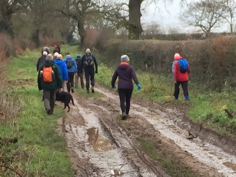
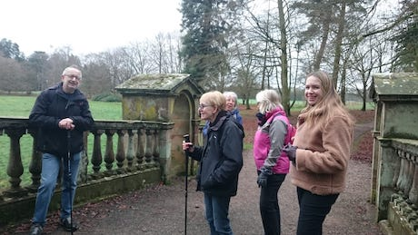
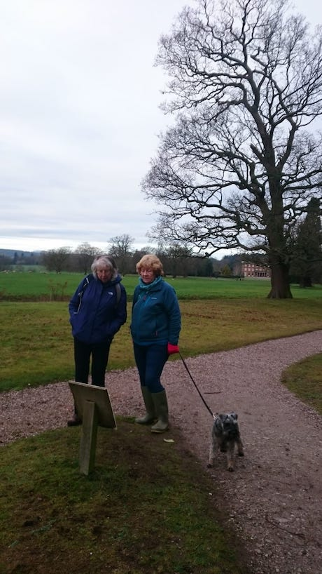

Xmas Sqwalk No 102 28th December 2018 Weston Park (See bottom of notes for route map)
36 were up for it -
Yupmeister and Barb, Anytime Tone and Part time Chris, Helen, Laura and Ross, Ross's mum Rita, Anne Marie, Jaycee, James, Tim Mothy and Margy, Janet and Mo, Jacko, BrollyWolly Bagman of Talke Talke and Brollywolly Bagwoman (Jan), Dceen and McCean, Paul Hecky Thump, Will and Ann, Helen, Tom Flacket, Malc Jay and Lynn Jay, Heavy Steve Machine and Jenny, andPete, Rob Sparklet and Tom Sparklet, Andy Mander and Lynn Mander, Turkish Tone and Turkish Julie.
Spikelett and 2 Pie Hard Dave Semi-Colon sadly had to drop out due to family issues.
3 dogs also turned up - Ross’s dog Penny, Mothy and Margy’s dog Clifford and Andy and Lynn’s dog Bear.
All food bills were settled up, much to the relief of Yuppy. He’d been informed on 2 occasions that whoever was last to pay their bill would also be responsible to settle any other outstanding payments. Maybe they’d been stung before??
20,000 steps had been recorded on several phone apps with around 10 miles being completed. Strangely, DC's had recorded around 30,000 steps. He must have a faulty app?!!
We left just after 4pm with a few Xmas carols playing in the background on the coach. Some may have preferred to listen to Yup’s flute playing but seemed happy enough hearing Ian Anderson of Jethro Tull blasting out Solstice Bells. Barb couldn’t eat all her fish, so guess what was boxed up for supper later. And Jacko confirmed he’d definitely be purchasing a new phone in the immediate future so he could be part of the Squarry Club Whatsapp group. We’ll hold you to that Keith.
Thanks to everyone for coming along today and being frog marched around at a faster pace than anticipated. Well done too to Helen who completed her third walk in as many days.
36 of us turned up today which may be a record. I’ll have to check. Oh, and not forgetting 3 dogs.
Happy New Year everyone
Yuppers
The group had gradually become very strung out with Anytime Tone and family bringing up the rear and arriving last in the Royal Oak. That’s got to be a first……
A Kelham island Xmas special ale was on together with Butty Bach, but it was either to be one or the other as we had to quickly move on to avoid the wrath of the landlord at the Bradford Arms if we were later than 1.45pm. Hecky Thump set off in advance as he wasn’t stopping for lunch; a trip to the panto awaited. Oh yes it was……
Jacko informed us that the Royal Oak pub was of course where Charlie II really hid from the Roundheads, and not in a tree as history tells us. And also that the Bradfords used to live in Weston Park Hall, hence the Bradford Arms pub. Always good to learn a bit of history on these walks. Thanks Keith.
We set off on time at 8.45am climbing steps away from the A5, over a slippy stile and across a couple of well drained fields.
Passing through a farm gateway Brolly Wolly Janet was attracted to a knob; not for the first time. She managed to yank it off but then gently teased it back into an upright position.
The Lichfield gate entrance to Weston Park was open as requested and the miniature train was being warmed up ready for the day trippers throughout the day.
The deli was well prepared for our arrival. DCeen and McCeen were first to arrive and beat the anticipated rush. Eggs were off the menu due to the limited time we had and the fact they only had one grill.
Despite agreeing an admission time at 10.30am, the key holder finally arrived 10 minutes late after several phone calls. Those on the longer walk would have to be frog marched if they were to include a quick drink at The Royal Oak.
It was a warm dry day, in fact probably the warmest we’ve ever had on our walks at Xmas. Even the sun shone down on us from mid-morning as the clouds lifted.
The Warrington’s Coach turned up almost half an hour early in the Westlands driven by Brian who was our driver last year at Delamere. Setting off at 750am from the Westbury we arrived at the Bradford Arms around 8.30am.
A toilet used had been opened for us, and after a steady visit we gathered for the group photo outside the Bradford Arms.
James won the competition for the heaviest rucksack and Jaycee won one for the sexiest stilettos. Ross meanwhile had forgotten his shoes so squelched around in his wellies with Penny the dog..
The group split with 8 departing on a leisurely ramble around the grounds led by Barb, and the rest setting off across the open fields taking a shortcut!!!! to the Tong Gate. Yup pointed out the reindeer in the distance but DC corrected the sightings confirming they were lamas. A simple enough error at Christmas time. As we got closer, they revealed their selves to be wooden cutouts fixed to a fence.
The Monarch way was muddy in places so it was as well JayCee had removed his stilettos. DC and Andrew M unintentionally took the mud plunge.
The route cut through a farm yard stacked high with bales of hay. The farm hand pointed out that we were on the wrong path but it was probably due to the small footpath signs being obscured by the bales. It must have been like looking for a needle in a haystack suggested Will later.
A short time later we passed the White Ladies Priory and Boscobel House but with no time to lose we continued on to Bishops Wood.
The Bradford Arms pub welcomes dogs but only in the bar area; so several members of the group with dogs remained in there, whilst the rest of us were allocated the large rear room of the pub.
As the ramblers had enjoyed their morning’s stroll around Weston Park, Barb had begun to consider taking up a new career in guided tours. And to demonstrate she waved her arms and inadvertently spilt her wine over Yuppy. Such a waste.
During her impressive tour of the grounds she’d led the group to the Hermit’s cave (Pendrill’s cave), the lakes and the Maze whilst Will led through the woods. The maze hedges were only 4 feet high but Mo found it more difficult than anyone else to find her way out. They returned to the deli for a hot chocolate before returning back to the Bradford arms along the A5. Short sqwalkers Jan slowed down the pace to share a rant from a disgruntled reindeer on her phone.
Spike had cancelled on the previous day as his dad had sadly passed away at the weekend. His meals were also cancelled without any issues at both the pub and cafe.
Nails however cancelled his lunch just half an hour before the agreed booked time on the day and the pub took an unsympathetic line, offering no refund. A cut-off time of 10.30am had been declared evidently although this hadn’t been conveyed to Yup. Not to worry, Brian, the driver, was more than happy to accept Nail’s steak and scampi meal on his behalf so all was well.
The xmas spirit had faded at the bar for reasons explained to me by the landlord a few days later. Maybe in the circumstances they shouldn’t have been working as front-line staff but hey ho.
Wainwright’s was available along with a Golden Bitter which you’d expect to be gold in colour; but it wasn’t. 2 other ales were on soon, whenever that was….. typical.
The food and service in the restaurant however was excellent. There were generous portions and mountains of veg and salad. Yup had promised Barb a whopper over Xmas and bygum she couldn’t have asked for a bigger one. The largest fish ever was served to her, bigger than a whale, which overhung her plate by a foot or more. Now what more could she want!!
Woo woo ice cream and other deserts and puddings at £4.25 were lip-smackingly devoured by many.
The Ramblers sauntered around the grounds enjoying the views over the lakes, finally ending up back at the deli for a hot chocolate.





.jpg)
.JPG)